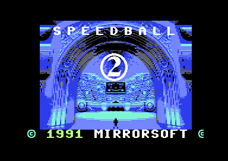
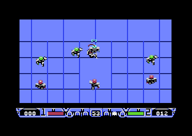
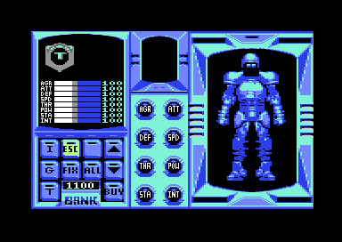

<meta charset="utf-8">
<meta name="viewport" content="width=device-width, initial-scale=1">
<title>Speedball 2</title>
<link rel="preconnect" href="https://fonts.googleapis.com">
<link rel="stylesheet" href="https://fonts.googleapis.com/css2?family=Lato:wght@400;700;900&family=IBM+Plex+Mono:wght@400;500&display=swap">
<style>
:root{
  --bg:#23262d; --paper:#e9e7e1; --surface:#ffffff; --surface-2:#f1efea; --line:#d5d3cc; --line-soft:#e0ded8;
  --ink:#2f3136; --ink-soft:#55585f; --ink-mute:#80838a;
  --link:#1f5fa8; --link-hover:#154480; --accent:#1f5fa8;
  --amber:#c25a00; --cyan:#1f5fa8; --coral:#d04a3a; --green:#2a8a4a; --violet:#4a5bd6; --hl:#fff0c2;
  --chip:#2f3136; --chip-ink:#ffffff;
  --c64blue:#40318d; --c64grey:#686868;
  --fd:'Lato',system-ui,sans-serif; --fb:'Lato',system-ui,sans-serif; --fm:'IBM Plex Mono',ui-monospace,Menlo,monospace;
  --col:1080px; --gx:68px; --fs:17px; --lh:1.6; --hw:900; --h1:46px; --h2:26px; --sy:48px; --pp:26px; --r:10px;
  --plate-shadow:0 1px 2px rgba(0,0,0,.05),0 4px 14px rgba(0,0,0,.05);
}
*{box-sizing:border-box}
html{background:var(--bg);min-height:100%}
body{background:var(--paper);color:var(--ink);font-family:var(--fb);font-size:var(--fs);line-height:var(--lh);max-width:var(--col);margin:0 auto;min-height:100vh;padding:0 0 4rem}
h1,h2,h3{font-weight:var(--hw);letter-spacing:-.01em;text-wrap:balance;color:var(--ink);margin:0}
.wrap{padding:0 var(--gx)}
.hero{padding:48px var(--gx) 8px;text-align:left}
.eyebrow{font-family:var(--fm);font-size:12px;letter-spacing:.08em;text-transform:uppercase;color:var(--ink-mute);margin:0 0 10px}
.hero h1{font-size:var(--h1);line-height:1.15;letter-spacing:-.02em;margin:0 0 14px}
.hero .sub{margin:0 0 .6em;color:var(--ink-soft)}
section{padding:var(--sy) 0 24px}
section:last-of-type{border-bottom:none}
.fig{font-family:var(--fm);font-size:12px;letter-spacing:.08em;text-transform:uppercase;color:var(--ink-mute);margin:0 0 10px}
h2.t{font-size:var(--h2);margin-bottom:12px}
.lede{color:var(--ink-soft);margin:0 0 30px}
.plate{background:var(--surface);border:1px solid var(--line);border-radius:var(--r);padding:var(--pp);box-shadow:var(--plate-shadow)}
.cap{font-size:14px;color:var(--ink-mute);margin-top:14px;line-height:1.55}
.cap b{color:var(--ink);font-weight:700}
code{font-family:var(--fm);font-size:.82em;background:var(--chip);color:var(--chip-ink);border-radius:4px;padding:2px 6px;overflow-wrap:break-word;-webkit-box-decoration-break:clone;box-decoration-break:clone}
@media (max-width:700px){:root{--gx:16px;--pp:14px;--h1:34px;--h2:22px;--fs:16px}}

.sb-shots{display:grid;grid-template-columns:repeat(auto-fit,minmax(220px,1fr));gap:16px}
.sb-shots figure{margin:0}
.sb-shots img{width:100%;height:auto;image-rendering:pixelated;border-radius:4px;display:block}
.sb-cv{max-width:100%;height:auto;image-rendering:pixelated;display:block;border-radius:4px}
.sb-bar{display:flex;flex-wrap:wrap;gap:8px;margin:0 0 14px}
.sb-bar button,.sb-key{font-family:var(--fm);font-size:12.5px;line-height:1.3;padding:5px 10px;border:1px solid var(--line);border-radius:6px;background:var(--surface);color:var(--ink);cursor:pointer}
.sb-bar button:hover,.sb-key:hover{border-color:var(--accent)}
.sb-bar button[aria-pressed="true"],.sb-key[aria-pressed="true"]{background:var(--accent);border-color:var(--accent);color:#fff}
.sb-out{font-size:15px;color:var(--ink-soft);margin:12px 0 0;min-height:3em}
.sb-out b{color:var(--ink)}
.sb-tbl{border-collapse:collapse;font-size:14.5px;width:100%;margin:6px 0 0}
.sb-tbl th,.sb-tbl td{text-align:left;padding:5px 10px 5px 0;border-bottom:1px solid var(--line-soft);vertical-align:top}
.sb-tbl th{font-weight:700;color:var(--ink-mute);font-size:12.5px;text-transform:uppercase;letter-spacing:.04em}
.sb-tbl td.n{font-family:var(--fm);font-size:13.5px}
.sb-scroll{overflow-x:auto}
.sb-miss{font-size:14px;color:var(--ink-mute);margin:0}
.sb-lights{display:inline-flex;gap:4px;vertical-align:middle;margin-left:8px}
.sb-lights i{display:block;width:14px;height:14px;border-radius:50%;background:var(--line)}
.sb-lights i.on1{background:#c46c71}.sb-lights i.on2{background:#706deb}
.sb-arena{display:flex;flex-wrap:wrap;gap:22px;align-items:flex-start}
.sb-arena canvas{flex:0 0 auto}
.sb-arena .sb-side{flex:1 1 260px;min-width:0}
.sb-grid{display:grid;grid-template-columns:repeat(auto-fill,minmax(64px,1fr));gap:6px}
.sb-grid button{padding:4px 0 2px;border:1px solid var(--line);border-radius:6px;background:#3a3a3a;cursor:pointer;display:flex;flex-direction:column;align-items:center}
.sb-grid button[aria-pressed="true"]{outline:3px solid var(--accent);outline-offset:-1px}
.sb-grid span{font-family:var(--fm);font-size:11px;color:#ddd}
.sb-grp{font-size:12.5px;color:var(--ink-mute);margin:12px 0 6px;font-family:var(--fm);text-transform:uppercase;letter-spacing:.06em}
.sb-teams td .sb-sbar{display:inline-block;height:10px;background:var(--accent);border-radius:2px;vertical-align:middle}
.sb-sw{display:inline-block;width:14px;height:14px;border-radius:3px;border:1px solid rgba(0,0,0,.2);vertical-align:-2px}
.sb-kb{display:flex;flex-direction:column;gap:5px;overflow-x:auto;padding-bottom:4px}
.sb-kb div{display:flex;gap:5px}
.sb-kb .sb-key{min-width:34px;padding:6px 4px;text-align:center;flex:0 0 auto}
.sb-kb .sb-key.p2{background:#e6eefb;border-color:#9db6e0}
.sb-kb .sb-key.p1{background:#fbe9e6;border-color:#e0a69d}
.sb-kb .sb-key.both{background:#ececec;border-color:#a8a8a8}
</style>
<!-- tabs -->
<header class="hero">
  <p class="eyebrow">1991 · Imageworks (Mirrorsoft)</p>
  <h1>Speedball 2</h1>
  <p class="sub">The C64's Speedball 2 plays armoured handball on a pitch two screens wide and more than six tall, scrolled under a score panel. Its side walls are lined with things to throw at: stars that pay points, ramps that make every later point worth more, and warp gates that send the ball out of the opposite wall.</p>
</header>
<main class="wrap" data-part="game">

<section id="game">
  <p class="fig">01 · The game</p>
  <h2 class="t">Brutal Deluxe climb the league</h2>
  <p>Speedball 2: Brutal Deluxe is a Bitmap Brothers game, first made for the Amiga and Atari ST. This C64 version came out in 1991 under Imageworks, Mirrorsoft's label. Its intro credits Carl Muller with the C64 code, Martin Walker with the music and sound effects, and Alan Tomkins with the graphics.</p>
  <p>The player runs Brutal Deluxe, a team of armoured players, through a knockout, a cup, or a league of two divisions, and plays each of the team's matches. A match is nine players a side and one steel ball, in two halves of 90 seconds. Points come from goals, from stars along the side walls, from bounce domes, and from injuring the other side's players. Coins picked up on the pitch pay for training in the gym between matches.</p>
  <p>The game comes off the disk in two loads, two files the computer reads into its memory one after the other. The first is the intro: the title, two pictures, a scrolling story, and the tune. The second holds everything else: the menus, the gym, the league and the matches. The second load fills the whole of memory, so the intro is gone once it has loaded.</p>
  <p>Numbers written with a $, such as <code>$0200</code>, are in hexadecimal, the base-16 numbering programmers use. On these pages each one is a place in the game's memory, and it links to the code or data there on the Source code tab. The names beside them, such as <code>music_play</code>, are the labels the Source code tab gives that place.</p>
  <div class="sb-shots plate" style="margin-top:22px">
    <figure><figcaption class="cap">The intro. The letters along the top and the turning 2 are sprites over a bitmap picture of the stadium.</figcaption></figure>
    <figure><figcaption class="cap">A match. Brutal Deluxe are red. The panel shows both scores, the multiplier's lights, and the clock.</figcaption></figure>
    <figure><figcaption class="cap">The gym, where the bank's money buys training, ten points of an attribute at a time.</figcaption></figure>
  </div>
</section>

<section id="music" data-part="intro">
  <p class="fig">02 · The tune</p>
  <h2 class="t">Music: the only tune is in the intro</h2>
  <p class="lede">The intro plays the game's one tune while the story scrolls. The match has only sound effects.</p>
  <div class="plate">
    <div id="sb-sid"><p class="sb-miss">The player runs in the built site, which serves the listing the tune comes from.</p></div>
    <p class="cap">Each button runs the intro's own music player, <code>$0200</code>-<code>$0EC3</code> of the first load, on a model of the C64's processor, the 6502, in the page. What the player writes to the sound chip, the SID, plays through a model of the SID. <code>test_music.js</code> runs the same player over the intro's whole listing, as the intro calls it, and checks that every frame's writes are the same, for 6,000 frames of each button.</p>
  </div>
  <p>The intro credits the music to Martin Walker, and the original score to Nation 12. The music player is a short routine that runs once a frame, each time the screen is drawn, 50 times a second (<code>music_play</code>, <code>$025D</code>). The SID has three voices, and each voice reads its own track. A track is a list of patterns, each played a set number of times, and a pattern is a list of notes, each with a length in ticks. A tick here is two frames (<code>$0D83</code>, the tune's speeds). An instrument sets how a note starts and fades (its envelope) and the shape of its sound wave, and can add a pulse sweep, a slide, an arpeggio or a drum sound (<code>voice_effects</code>, <code>$03BC</code>).</p>
  <p>Fire does not stop the tune. It starts a fade (<code>music_fade</code>, <code>$14B8</code>), which turns the volume down a step every nine frames, about a fifth of a second. The intro loads the game only when the tune has faded to nothing. The second button presses fire ten seconds in.</p>
  <p>The tune's data holds a second tune, three patterns of one note each that end the tune at once. The intro starts its music twice, and both times it asks for tune 0 (<code>$146B</code>, <code>$14A4</code>), so tune 1 is never heard (<a href="discoveries.html#unused-tune">Discoveries</a>).</p>
</section>

<section id="frame">
  <p class="fig">03 · One frame of a match</p>
  <h2 class="t">The score panel is a second screen under the pitch</h2>
  <p class="lede">The pitch and the panel use different characters, colours and scrolling. The game changes the video chip's registers part way down the screen, behind a black band.</p>
  <div class="plate">
    <div class="sb-bar" role="group" aria-label="The frame"><button type="button" id="sb-f0" aria-pressed="true">The frame</button><button type="button" id="sb-f1" aria-pressed="false">Where the registers change</button></div>
    <canvas id="sb-frame" class="sb-cv" width="768" height="544"></canvas>
    <p class="cap">One frame of a match, drawn by the site's model of the video chip from the game's memory as the frame began and every register write made during it, recorded in VICE.</p>
  </div>
  <p>The video chip draws the picture line by line, from the top, and can stop the processor when it reaches a chosen line: a raster interrupt. The processor then runs a short routine and changes the chip's settings, its registers, for the rest of the picture. Each band starts with one. The chip has only eight sprites, small pictures it draws over the screen, and a match has up to 26 players, pickups and other moving things. So the game moves each sprite further down the screen once it has been drawn, from a list of interrupts it builds every frame, sorted by line (<code>irq_mux</code>, <code>$126B</code>). The same list carries the commands that start each band (<code>raster_commands</code>, <code>$1382</code>).</p>
  <div class="sb-scroll"><table class="sb-tbl" id="sb-writes"><thead><tr><th>Line</th><th>Register</th><th>Value</th><th>What it does</th></tr></thead><tbody></tbody></table></div>
  <p>The pitch is built of characters, tiles of 8 by 8 pixels, in multicolour mode, where each pixel is twice as wide and can be one of four colours. The screen is narrowed to 38 columns and 24 rows, which hides the edge where new tiles appear as the pitch scrolls a pixel at a time. The pitch is drawn on two screens, at <code>$CC00</code> and <code>$F400</code>, and the game swaps them each time the scroll passes a whole character (<code>scroll_flip</code>, <code>$2228</code>). The panel needs 40 columns, its own characters and its own colours. Those changes take more than one line to make, so for the lines in between the game turns on extended colour and multicolour together, a mode the chip draws black, and turns it off again when the panel is ready.</p>
</section>

<section id="scoring">
  <p class="fig">04 · Scoring</p>
  <h2 class="t">The multiplier makes each score worth half as much again, or double</h2>
  <p class="lede">Every way of scoring is worth more when the multiplier lights on the panel lean towards the team that scores.</p>
  <div class="plate">
    <div class="sb-bar" role="group" aria-label="The multiplier's position" id="sb-mult"></div>
    <div class="sb-scroll"><table class="sb-tbl" id="sb-points"><thead><tr><th></th><th>Team 1</th><th>Team 2</th><th>Table</th></tr></thead><tbody></tbody></table></div>
    <p class="cap">Read from the game's tables at <code>$1C6E</code>-<code>$1C8B</code>, five bytes for each team and each row, one for each position of the multiplier. The points are stored as decimal digits, so <code>$20</code> means 20.</p>
  </div>
  <p>The multiplier has five positions, from all team 1's to all team 2's, and starts each match in the middle (<code>$51</code>, <code>match_reset</code>, <code>$2551</code>). A ball thrown up one of the ramps at the side of the pitch rides the ramp and moves the multiplier a step towards the thrower's team (<code>multiplier_ramp</code>, <code>$2C61</code>). Each step adds half the base value: a goal is worth 10, then 15, then 20 (<code>multiplier_points</code>, <code>$34C7</code>).</p>
  <p>The same table pays for an injury. A player whose energy runs out is carried off, a substitute comes on, and the team that did it scores a goal's worth (<code>injured</code>, <code>$39CF</code>). Five lit stars on one wall also pay a goal's worth (<code>stars_complete</code>, <code>$35D3</code>). A single star and a bounce dome pay a fifth of that. The last row is how many opposing players an electrified ball can knock down before it is an ordinary ball again (<code>pick_up</code>, <code>$2D59</code>).</p>
</section>

<section id="arena">
  <p class="fig">05 · The arena</p>
  <h2 class="t">Each wall feature is a range of rows</h2>
  <p class="lede">The pitch is 80 characters wide and 152 tall. What the ball does when it reaches a wall depends only on which row it is on.</p>
  <div class="plate">
    <div class="sb-arena">
      <canvas id="sb-pitch" class="sb-cv" width="320" height="608"></canvas>
      <div class="sb-side">
        <div class="sb-bar" role="group" aria-label="Features of the arena" id="sb-feat"></div>
        <p class="sb-out" id="sb-feat-out" aria-live="polite"></p>
      </div>
    </div>
    <p class="cap">A plan of the pitch from the rows and columns the game tests the ball against, one square a character. The stars' places come from the table at <code>$3755</code>; the other ranges are constants in the routines named beside each.</p>
  </div>
  <p>The game keeps the ball's place as a column and a row of characters, at <code>$DE</code> and <code>$F8</code>, with a fraction for the pixels in between. Each frame the ball's routine checks that place against the walls (<code>ball_frame</code>, <code>$2B12</code>). The left and right walls are columns below 8 and from 72; the end walls are rows below 8 and from 143. A bounce off an end wall between columns 34 and 45, low enough, is a goal.</p>
  <p>The features are laid out so that the pitch turned half a turn looks the same: the left wall's stars are in the top half and the right wall's in the bottom half, and the same goes for the electrobounce units. Each team gets the same walls to aim at when the ends change at half time.</p>
</section>

<section id="pickups">
  <p class="fig">06 · Pickups</p>
  <h2 class="t">Twelve of the 32 pickups are the same coin</h2>
  <p class="lede">A pickup's type is the picture it shows. The twelve coin types are the twelve steps of one spinning coin.</p>
  <div class="plate">
    <div id="sb-pick"><p class="sb-miss">The pickups are drawn from the game's bytes in the built site.</p></div>
    <p class="sb-out" id="sb-pick-out" aria-live="polite"></p>
    <p class="cap">Drawn from the packed sprites at <code>$A1D0</code>, unpacked and turned into rows as the match does it (<code>match_setup</code>, <code>$2657</code>), in the colours a pickup is given: brown for armour and tokens, blue for coins. Five of the coin's steps are blank in the packed data, and the page makes them as the game does, as mirror images of the others.</p>
  </div>
  <p>Once a second the game may put a new pickup on the pitch, in one of four slots, at a random place outside the middle columns (<code>spawn_pickup</code>, <code>$2FE8</code>). Half the time it is a coin; otherwise the type is a random one of the 32, and twelve of those are coins too. Armour only goes in the first slot, and only while nobody is wearing any. Tokens only go in the other three. A coin is left out once either team has more coins than a match in that competition pays for.</p>
  <p>The type is also the picture: a pickup shows as sprite picture number type + 6. A coin turns because a routine steps one pickup's frame each frame, from <code>$1A</code> to <code>$25</code> and round again (<code>pickups_spin</code>, <code>$306E</code>), so a coin's type changes as it spins, and every coin type pays the same (<code>$30F7</code>).</p>
</section>

<section id="league">
  <p class="fig">07 · The league and the gym</p>
  <h2 class="t">Two computer teams never play their match</h2>
  <p class="lede">The league has two divisions of eight. Only Brutal Deluxe's matches are played; every other result is drawn from the two teams' strengths.</p>
  <div class="plate">
    <div class="sb-bar" role="group" aria-label="Order the teams"><button type="button" id="sb-ord0" aria-pressed="true">By team number</button><button type="button" id="sb-ord1" aria-pressed="false">By strength</button></div>
    <div class="sb-scroll"><table class="sb-tbl sb-teams" id="sb-teams"><thead><tr><th>No.</th><th>Team</th><th>Strength</th><th>Colour</th></tr></thead><tbody></tbody></table></div>
    <p class="cap">The names from <code>$0E11</code>, the strengths from <code>$0D11</code>, and each computer team's colour from <code>$1D34</code>, by the low two bits of its number. Brutal Deluxe are always red.</p>
  </div>
  <p>When two computer teams meet, the game does not play their match. A routine takes the two teams' strengths and returns a result and two scores (<code>simulate_match</code>, <code>$559B</code>). The strengths rise with the team's number, with one exception, from Brutal Deluxe at 100 to Super Nashwan at 226. Each division plays seven weeks of four matches, then the same fixtures again with the ends changed (<code>league_week</code>, <code>$71A1</code>). A win is worth 10 league points and a draw 5, and each team also gets a tenth of its score (<code>league_result</code>, <code>$5431</code>).</p>
  <p>The fifteen computer teams share four colours, so a league has teams that look alike. Team 2's colour comes from the low two bits of its number (<code>team_2_colours</code>, <code>$1D34</code>).</p>
  <div class="plate" style="margin-top:22px">
    <div class="sb-bar" role="group" aria-label="Attributes" id="sb-gym"></div>
    <p class="sb-out" id="sb-gym-out" aria-live="polite"></p>
    <p class="cap">The prices from <code>$673E</code>, stored as decimal digits, and the equipment's names from <code>$62D5</code>. The picture is the armour pickup that raises the same attribute (<code>pickup_handlers</code>, <code>$30AF</code>).</p>
  </div>
  <p>The gym sells ten more of an attribute at a time, for one player, a line of three, or the team, at the price for each player (<code>squad_raise</code>, <code>$635D</code>). It will not take an attribute past a limit set by the team's best line: in a league or a cup, that line's average, rounded down to tens, plus 30, and never more than 220 (<code>gym_price</code>, <code>$65D9</code>). The gym names a piece of equipment for each attribute, and each armour pickup's picture fits the name for its attribute: the SPD pickup is a boot, the DEF pickup a chest guard.</p>
</section>

<section id="controls">
  <p class="fig">08 · Controls</p>
  <h2 class="t">Ten keys stand in for the two joysticks</h2>
  <p class="lede">Both loads read the keyboard as a second pair of joysticks, five keys for each.</p>
  <div class="plate">
    <div class="sb-kb" id="sb-kb"></div>
    <p class="sb-out" id="sb-kb-out" aria-live="polite">Press a key on the drawing to see what the game reads from it.</p>
    <p class="cap">The keys come from the game's tables at <code>$1C4D</code> and <code>$1C53</code>, stored as key numbers. The C64 wires its keys in a grid of eight rows and eight columns, the keyboard matrix, and a key's number is eight times its row plus its column.</p>
  </div>
  <p>The C64 has two joystick sockets, called ports. The game reads port 2 for player one and port 1 for player two (<code>read_input</code>, <code>$4A75</code>). Each direction and the fire button is one bit, an on/off signal, in a byte for each port. When a key is down and joystick 1 is still, the game scans the keyboard and lets the keys in its tables set the same bits as the stick: I, M, J and K for up, down, left and right, and SPACE for fire, on port 2; A, Z, comma and full stop, and /, on port 1. RUN/STOP sets a sixth bit on both.</p>
  <p>In a match, P pauses until fire, and RUN/STOP ends the match and goes back to the main menu (<code>match_frame</code>, <code>$212E</code>). RESTORE goes to the main menu from anywhere in the game (<code>nmi</code>, <code>$4B8B</code>), and does nothing in the intro (<code data-part="intro">$13FB</code>). The manual names F for a fast mode, and the code has none: F does something only with the cheat on (<a href="discoveries.html#cheat">Discoveries</a>).</p>
</section>

</main>
<footer style="margin:16px 0 0;padding:22px var(--gx) 0;border-top:1px solid #e0ded8;font-family:'IBM Plex Mono',ui-monospace,Menlo,monospace;font-size:12px;color:#80838a"><a href="https://github.com/gamesexplained/gamesexplained" style="color:#1f5fa8;text-decoration:none">GitHub</a> · <a href="https://discord.gg/3V9GWyRDWV" style="color:#1f5fa8;text-decoration:none">Discord</a><br>© Games Explained contributors. Write-ups, facts and symbol maps are available under <a href="https://creativecommons.org/licenses/by-sa/4.0/" style="color:#1f5fa8;text-decoration:none">CC BY-SA 4.0</a>; code under <a href="https://opensource.org/licenses/MIT" style="color:#1f5fa8;text-decoration:none">MIT</a></footer>
<script src="../../lib/c64.js"></script>
<script src="../../lib/cpu6502.js"></script>
<script src="../../lib/sid.js"></script>
<script>
/* sb-music */
// createDriver for C64Sid: runs the intro's own music player on the kit's 6502 (C64Cpu, from
// ../../lib/cpu6502.js, which sid.js passes to createDriver). The first frame calls music_init
// ($0200) with the tune's number in A, as the music object does ($146B, $14A4); every frame then
// calls music_play ($025D), as the frame top runs the music object ($1BDC). A button with fire
// sets fade_speed ($0627) to 8 before that frame's call, as the music object's message 2 does
// (music_fade, $14B8). D.mem gives the player's bytes as [[address, bytes]] (SB_MUSIC_RANGES of
// the intro's listing) and D.tunes the buttons. The player reads no chip register, so io.read
// is never called for one; its zero page pointer ($02-$03) it sets itself. music_on ($0628) says
// whether the tune still plays.
const SB_MUSIC_RANGES = [[0x0200, 0x0EC3]];
const SB_TUNES = [
  { name: 'Tune 0: the intro', tune: 0 },
  { name: 'Tune 0, with fire after 10 seconds', tune: 0, fire: 500, ends: 635 },
  { name: 'Tune 1: never played', tune: 1, ends: 6 },
];
function createDriver(D, C64Cpu) {
  const sid = new Uint8Array(25);
  let m, cpu, c, writes = [], frame = 0, on = false;
  const io = {
    read() { return 0; },
    write(ad, val) { if (ad >= 0xD400 && ad <= 0xD418) { sid[ad - 0xD400] = val; writes.push(ad - 0xD400, val); } },
  };
  const call = (ad, a) => cpu.call(ad, { a, x: 0, y: 0 }, { maxSteps: 200000 });
  return {
    sid,
    get writes() { return writes; },
    init(t) {
      c = D.tunes[t];
      m = new Uint8Array(0x10000);
      for (const [ad, bytes] of D.mem) m.set(bytes, ad);
      cpu = new C64Cpu.CPU(m, { port: 0x35, io });
      sid.fill(0); writes = []; frame = 0; on = true;
    },
    stop() { writes = [24, 0]; sid[24] = 0; on = false; if (m) m[0x0628] = 0; },   // music_stop ($1499)
    play() {
      writes = [];
      if (!on) return;
      if (frame === 0) call(0x0200, c.tune);
      if (c.fire === frame) m[0x0627] = 8;
      call(0x025D, 0);
      frame++;
      on = (m[0x0628] & 0x80) !== 0;
    },
    playing() { return on; },
    voice(x) { return m ? { pattern: m[0x0683 + x], note: m[0x0692 + x], instrument: m[0x0698 + x] } : {}; },
  };
}
// end of sb-music
</script>
<script>
'use strict';
const $ = (id) => document.getElementById(id);
const LIB = typeof C64 !== 'undefined';
const hex = (n, w = 4) => '$' + n.toString(16).toUpperCase().padStart(w, '0');
const PAL = LIB ? C64.PAL : [];
const NEED = 'This widget draws from the game\'s bytes through the site\'s shared scripts; it works in the built site.';
const missing = (el) => { if (!el) return; const p = document.createElement('p'); p.className = 'sb-miss'; p.textContent = NEED; el.replaceWith(p); };
const press = (box, b) => box.querySelectorAll('button').forEach((x) => x.setAttribute('aria-pressed', x === b));
const bcd = (v) => (v >> 4) * 10 + (v & 15);

const SB_FRAME = {"schema":1,"standard":"PAL","lines":312,"cycles":63,"about":"Speedball 2, a one-player match in its first half (VICE 3.14.0, PAL, 30 October 2026)","vic":[211,143,161,126,244,136,61,137,176,166,216,166,211,119,176,142,8,31,0,0,0,255,216,0,205,112,241,0,255,0,255,255,240,240,255,254,240,240,255,242,242,242,245,245,241,242,245],"cia2":[196,63],"cpu":[47,53],"writes":[[36,17,53265,20,20],[36,26,53270,212,20],[36,40,53282,254,14],[36,47,53283,241,1],[36,61,53272,223,222],[221,63,53265,95,95],[222,6,53272,205,204],[222,12,53270,216,24],[222,25,53282,255,15],[222,32,53283,254,14],[230,59,53265,31,31],[236,39,53249,142,142],[240,14,53251,123,123],[241,8,53250,158,158],[243,9,53253,134,134],[244,3,53252,245,245],[244,47,53242,99,99],[244,52,63482,99,99],[250,32,53254,60,60],[253,29,53256,175,175],[256,39,53258,219,219],[258,40,53261,118,118],[262,29,53262,175,175]],"colour":"Dg4ODg4ODg4ODg4ODg4ODg4ODg4ODg4ODg4ODg4ODg4ODg4ODg4ODg4ODg4ODg4ODg4ODg4ODg4ODg4ODg4ODg4ODg4ODg4ODg4ODg4ODg4ODg4ODg4ODg4ODg4ODg4ODg4ODg4ODg4ODg4ODg4ODg4ODg4ODg4ODg4ODg4ODg4ODg4ODg4ODg4ODg4ODg4ODg4ODg4ODg4ODg4ODg4ODg4ODg4ODg4ODg4ODg4ODg4ODg4ODg4ODg4ODg4ODg4ODg4ODg4ODg4ODg4ODg4ODg4ODg4ODg4ODg4ODg4ODg4ODg4ODg4ODg4ODg4ODg4ODg4ODg4ODg4ODg4ODg4ODg4ODg4ODg4ODg4ODg4ODg4ODg4ODg4ODg4ODg4ODg4ODg4ODg4ODg4ODg4ODg4ODg4ODg4ODg4ODg4ODg4ODg4ODg4ODg4ODg4ODg4ODg4ODg4ODg4ODg4ODg4ODg4ODg4ODg4ODg4ODg4ODg4ODg4ODg4ODg4ODg4ODg4ODg4ODg4ODg4ODg4ODg4ODg4ODg4ODg4ODg4ODg4ODg4ODg4ODg4ODg4ODg4ODg4ODg4ODg4ODg4ODg4ODg4ODg4ODg4ODg4ODg4ODg4ODg4ODg4ODg4ODg4ODg4ODg4ODg4ODg4ODg4ODg4ODg4ODg4ODg4ODg4ODg4ODg4ODg4ODg4ODg4ODg4ODg4ODg4ODg4ODg4ODg4ODg4ODg4ODg4ODg4ODg4ODg4ODg4ODg4ODg4ODg4ODg4ODg4ODg4ODg4ODg4ODg4ODg4ODg4ODg4ODg4ODg4ODg4ODg4ODg4ODg4ODg4ODg4ODg4ODg4ODg4ODg4ODg4ODg4ODg4ODg4ODg4ODg4ODg4ODg4ODg4ODg4ODg4ODg4ODg4ODg4ODg4ODg4ODg4ODg4ODg4ODg4ODg4ODg4ODg4ODg4ODg4ODg4ODg4ODg4ODg4ODg4ODg4ODg4ODg4ODg4ODg4ODg4ODg4ODg4ODg4ODg4ODg4ODg4ODg4ODg4ODg4ODg4ODg4ODg4ODg4ODg4ODg4ODg4ODg4ODg4ODg4ODg4ODg4ODg4ODg4ODg4ODg4ODg4ODg4ODg4ODg4ODg4ODg4ODg4ODg4ODg4ODg4ODg4ODg4ODg4ODg4ODg4ODg4ODg4ODg4ODg4ODg4ODg4ODg4ODg4ODg4ODg4ODg4ODg4ODg4ODg4ODg4ODg4ODg4ODg4ODg4ODg4ODg4ODg4ODgEBAQ4ODgICAgIODg4ODg4OAQEODg4ODg4OBQUFBQ4ODgEBAQ4ODg4ODg4ODg4ODg4ODg4ODg4ODg4ODg4ODg4ODg4ODg4ODg4ODg4ODgkPCAcADwQPBA8FDwMOAAsECwIPAAcFDA==","ram":[{"a":49152,"b":"AAAAAAAAAAAAAAAAAAAAAAAAAAAAAAAAAAAAAAAAAAAAAAAAAAAAAAAAAAAAAKgAAlYACQGACACABABAAAAA"},{"a":51712,"b":"AAAAAAAAAAAAAAAAAAAAAAAAAAAAACAAALgAAPwAAPwAALgAAHQAABAAAAAAAAAAAAAAAAAAAAAAAAAAAAAA"},{"a":53504,"b":"ACgAAL4AAL4AAKoADKowP6r8P2n8P1X8P//8Ff9UNVVcNVVcEf9EIVVIENcEANcAAEEAAMMAAwDAAAAAAAAA"},{"a":55424,"b":"ACgQAL40AL59AKp/A6p/H6pdP2nUP1XQPddAFfVANVVAHVfAHVfAHQfABgdABgdAAQFAAANAAANAAAFAAAAA"},{"a":56064,"b":"AoAAC+AAC+dQCqf0Cqd8Cqd8Bp9UBVVUkXUoVfUI33UA31UAHVUANVQAAFUAAF8AABdAAAXAAAVQAAFwAABA"},{"a":57024,"b":"ABKAADvgAHvgAPqgAPqgA1qgA3aQAnVQAn/AAF1AAHfQABfwABV6AH3eAH0EAfUAAdcAAdAAAUAAAdAAAfAA"},{"a":59264,"b":"AAAAAAAAAAAAAAAAAMAAB/wAB9/AF9VQKd3wKX98un9fun1Vun33unX/KdVfKdVVD99gA99gA1AAAAAAAAAA"},{"a":61440,"b":"PH5mZmZmfjw="},{"a":61456,"b":"PGYGDDBgfn4="},{"a":61496,"b":"fmYMGBgYGBg="},{"a":61528,"b":"AICAgICAgAA="},{"a":61568,"b":"APz8/Pz8/AAA/v7+/v7+AAD///////8AAACVVQAAAAAAVVRSwMAAAABtkpukpKb5AFVWEhISMgMARZq6ubW3twBVgqKentoWVFZ1/d3d/TIAFTIyCgYKDjAwAAAAAAAAQIDAAAAAAAABAVarAAAAAOVproMAAAAAWVmqqgAAAACVlaqqAAAAAAICAgAAAAAAAABWVQAAAAAAVRWFAwMAAAB5huYaGppvAFWVhISEjMAAUaaubl7e3gBVgoq2tqeUFZVdf3d3f4wAVIyMoJCgsAwMAAAAAAAAAQIDAAAAAABAQJXqAAAAAFtpusIAAAAAZWWqqgAAAABWVqqqAAAAAICAgAAAAAAAAABVVQAAAAAAlaCgpKSoqABVampqampqAFWqqqqqqv8AQUGqlpbXFABVqqpV/wAAAFWgoKWlqqoAVgIGRkaGhgAAAAAAAAAAqKioqKi8gIBqaWlpaak5GQACAQERISEmAAIhIRERkWIAAhERISEhIvc3NzQ1NzcH39zcHFzc3NwAwERESEhIiADASEhEREaJAMBAQERISJigYGFhYWJgYAYGVlaqqg4G/1WqqgAAAAALAwMAAAAAAABV/wAAAAAA7MDAAAAAAAA="},{"a":62280,"b":"lZWV1dX1pdVWVlZXV19aVwAAAACAgODgAAAAAAICCwuVlZXV1fWl1RgUEzEiIzIzNBY0FTUkNDQlNBc2NiY0FjQ0FTUkNCU0NzgUEzEiIycaOQAAADk6OxISEhA8GT0ZPhk/BwdAKEEoQihDEhISEURFOQAAADkpIUZGRkZGIB9GRkZGHh0cORs5R0hISTkqOSssLUZGRkYuL0ZGRkZGMA=="},{"a":62464,"b":"a2trbWtra2tra2tta2tra2tra21ra2tra2trbWtra2tra2tta2tra2tra21ra2tra2trbWtra2tra2tta2tra2tra21ra2tra2trbWtra2tra2tta2tra2tra21ra2tra2trbWtra2tra2tta2tra2tra21ra2tra2trbWtra2tra2tta2tra2tra21ra2tra2trbWtra2tra2tta2tra2xsbG5sbGxsbGxsbmxsbGxsbGxubGxsbGxsbG5sbGxsbGxsbmxsbGxra2tta2tra2tra21ra2tra2trbWtra2tra2tta2tra2tra21ra2tra2trbWtra2tra2tta2tra2tra21ra2tra2trbWtra2tra2tta2tra2tra21ra2tra2trbWtra2tra2tta2tra2tra21ra2tra2trbWtra2tra2tta2tra2tra21ra2tra2trcmxsbGxsbGxvbGxsbGxsbHFra2tra2trbWtra2tra2tta2tra2tra21ra2tra2tra2tra2tra2tta2tra2tra21ra2tra2trbWtra2tra2tta2tra2tra2tra2tra2trbWtra2tra2tta2tra2tra21ra2tra2trbWtra2tra2tra2tra2tra21ra2trbGxsbmxsbHBsbGxubGxscGxsbHFra2tra2tra2tra2tra2tybGxscGtra21ra2tta2trbWtra21ra2tta2tra2tra2tra2tra2trbWtra21ra2tta2trbWtra21ra2tta2trbWtra2tra2tra2tra2tra21ra2tta2trbWtra21ra2tta2trbWtra21ra2tra2tra2tra2tra2tta2trbWxsbG9sbGxvbGxsb2xsbG9sbGxvbHBsbGxsbGxsbGxsbHBsb2xsbG9oaGhoaGhoaGhoaGhoaGhoaGj29/hVnWpq+Wpqavlqasz29/hVaGho7O3s7Ozt7Ozs7ezs7O3s7Ozu7/Dx8o/z9PX09PT19PO+7/Hw8uzs7OXm5eXl5uXl5ebl5eXm5eXljo2M5+iL6errivy56+rpuv3+u7y95eXe3t7e3t7e3t7e3t7e3t7e34CDr+DhgoHi4+T65OPisLHg4fuyr9/ea2tra2tra2tra2tra2tra2tra2tra2tra2tra2tra2tra2tra2traw=="},{"a":63480,"b":"nmxiRHsoAAA="},{"a":64168,"b":"wMAAAAAAAAA="},{"a":64320,"b":"AAAAAAAAAAA="},{"a":64336,"b":"//////////9VVVVVVVVVVVVVVf8AVVVVdXV1dXV1dXV1dXX/MHV1dXV1df8AVVVVVVVV/zB1dXV1dXX1NXV1dXV1dX9wdXV1"},{"a":64512,"b":"JSXVVl5RcQDVfVVXVVVV/2n1ZZWVVVX/FxQXJeVVdfM="},{"a":64592,"b":"/1zBPfdFSkzd2VhUVJeXZQDAAADNVVVVwV9UV1V1cd3zzcbJCTUVFQMAAwAADjEx"},{"a":64744,"b":"Pw8/Aw8DDwA="},{"a":64888,"b":"WFhXlbVFTQBXfVXVVVVV/2lfWVZWVVX/1BTUWFtVXc8="},{"a":64968,"b":"/zVDfN9RoTF3ZyUVFdbWWQADAABzVVVVQ/UV1VVdTXfPc5NjYFxUVMAAwAAAsExM"},{"a":65120,"b":"/PD8wPDA8AA="},{"a":65264,"b":"/1VVVVVVVQDPATBQk50VAD01NjY2NQ0A8HBwcHBzwwBdVFeXaeVV8HXFdXlVVJRkQ3bQ1Rb2fTD//////wAA/09PT09PAAD/DzzTUXBAQ88AA4NzAAAAwDc7GNvq2VVVzPdVXZV1933/FVXV1VdcVQAADDPMM8w/wMDMw8zDTE8AAAwzzDDMMAMP/wDwwADwX//w//wAAAD//wxw0/DwUPAAAMAAADTQ///////ADAz//////wAAAP/X19eqFDwAAAAAAAADAw8GOjbW1VX11bCQnFxXX1f//////////9f/qgBVqqpVAFXVFhUVG9fD/wBVVf9VqgAAwMLNAAADD/A8x0UNAQHD"},{"a":65535,"b":"Eg=="}],"capture":{"phase_cycles_uncertain":0,"frame_cycles":19658,"frame_ended_on_line":0,"picture_lines_low":0,"writes_account_for_end_state":true,"ram_bytes_changed_during_frame":333,"colour_cells_changed_during_frame":0}};

// The game's unpacker ($498E): a byte below $80 starts that many plus one literal bytes; a byte
// from $80 copies earlier output, from 256 less it back, for the length in the next byte; a length
// of 0 ends the data.
function unpack(m, src) {
  const out = [];
  for (;;) {
    const b = m[src++];
    if (b < 0x80) { for (let k = 0; k <= b; k++) out.push(m[src++]); continue; }
    const n = m[src++];
    if (!n) return Uint8Array.from(out);
    const from = out.length - (256 - b);
    for (let k = 0; k < n; k++) out.push(out[from + k]);
  }
}
// sprite_rows ($4D8C): a frame stored as three columns of 21 bytes, turned into the chip's rows
function rows(f) { const o = new Uint8Array(63); let y = 0; for (let x = 0; x < 63; x++) { o[y] = f[x]; y += 3; if (y >= 63) y -= 62; } return o; }
// sprite_mirror ($4E18): each row's three bytes end for end, each byte's pixel pairs reversed
const flip = (b) => ((b & 3) << 6) | ((b & 12) << 2) | ((b & 48) >> 2) | ((b & 192) >> 6);
function mirror(s) { const o = new Uint8Array(63); for (let y = 0; y < 21; y++) { o[y * 3] = flip(s[y * 3 + 2]); o[y * 3 + 1] = flip(s[y * 3 + 1]); o[y * 3 + 2] = flip(s[y * 3]); } return o; }
// the match's sprite frames $00-$2F from arena_sprites ($A1D0), with the coin's spin mirrored in
// from the pairs at $2A65, as match_setup leaves them after the run-out ($29B6, $29DC)
function arenaFrames(G) {
  const raw = unpack(G.ram, 0xA1D0), F = [];
  for (let f = 0; f < 48; f++) F.push(rows(raw.subarray(f * 64, f * 64 + 63)));
  const pairs = G.bytes(0x2A65, 10);
  for (let k = 0; k < 10; k += 2) F[pairs[k + 1]] = mirror(F[pairs[k]]);
  return F;
}

// ---- 03 the frame
const SB_BANDS = [
  [36, 0xD011, 'Display on, 24 rows, the vertical scroll'],
  [36, 0xD016, 'Multicolour, 38 columns, the horizontal scroll'],
  [36, 0xD022, 'The pitch\'s first shared colour'],
  [36, 0xD023, 'The pitch\'s second shared colour'],
  [36, 0xD018, 'Screen at $F400, characters at $F800: the pitch'],
  [221, 0xD011, 'Extended colour on with multicolour: the chip draws black'],
  [222, 0xD018, 'Screen and characters at $F000: the panel'],
  [222, 0xD016, 'Multicolour, 40 columns, no scroll'],
  [222, 0xD022, 'The panel\'s first shared colour'],
  [222, 0xD023, 'The panel\'s second shared colour'],
  [230, 0xD011, 'Extended colour off, 25 rows: the panel shows'],
];
function frameSection() {
  if (!LIB) { missing($('sb-frame')); return; }
  const body = $('sb-writes').tBodies[0];
  for (const [line, reg, what] of SB_BANDS) {
    const w = SB_FRAME.writes.find((x) => x[0] === line && x[2] === reg);
    const v = w[4] != null ? w[4] : w[3];
    const tr = document.createElement('tr');
    tr.innerHTML = `<td class="n">${line}</td><td class="n">${hex(reg)}</td><td class="n">${hex(v, 2)}</td><td>${what}</td>`;
    body.appendChild(tr);
  }
  const later = SB_FRAME.writes.filter((x) => x[0] > 230).length;
  const tr = document.createElement('tr');
  tr.innerHTML = `<td class="n">236-262</td><td class="n">$D000-$D00F</td><td class="n"></td><td>${later} writes: the sprites' places for the top of the next frame</td>`;
  body.appendChild(tr);
  const show = (bands) => {
    const r = C64.drawFrame($('sb-frame'), SB_FRAME, 2);
    if (bands) {
      const ctx = $('sb-frame').getContext('2d'), s = 2;
      const mark = (line, label, col, dy) => {
        const y = (line - r.line0) * s;
        ctx.fillStyle = col; ctx.fillRect(0, y, r.w * s, 2);
        ctx.font = 'bold 15px "IBM Plex Mono", monospace';
        const tw = ctx.measureText(label).width;
        ctx.fillStyle = 'rgba(0,0,0,.8)'; ctx.fillRect(8, y + dy, tw + 12, 22);
        ctx.fillStyle = col; ctx.fillText(label, 14, y + dy + 16);
      };
      mark(36, 'line 36: the pitch', '#ffd23f', 4);
      mark(221, 'line 221: black while the registers change', '#ff6b6b', -26);
      mark(230, 'line 230: the panel', '#6bff95', 26);
    }
    $('sb-f0').setAttribute('aria-pressed', !bands); $('sb-f1').setAttribute('aria-pressed', bands);
  };
  $('sb-f0').onclick = () => show(false); $('sb-f1').onclick = () => show(true);
  show(false);
}

// ---- 04 scoring
function scoring(G) {
  const T = G.bytes(0x1C6E, 30), box = $('sb-mult'), body = $('sb-points').tBodies[0];
  const ROWS = [['A goal, an injury, five stars', 0, 'goal_points'], ['A star or a bounce dome', 10, 'bonus_points'], ['Opponents an electric ball knocks down', 20, 'electro_charges']];
  const NAMES = ['All team 1\'s', 'One step to team 1', 'The middle', 'One step to team 2', 'All team 2\'s'];
  const show = (p) => {
    body.innerHTML = '';
    for (const [name, o, sym] of ROWS) {
      const tr = document.createElement('tr');
      tr.innerHTML = `<td>${name}</td><td class="n">${bcd(T[o + p])}</td><td class="n">${bcd(T[o + 5 + p])}</td><td class="n">${hex(0x1C6E + o + p)}, ${hex(0x1C6E + o + 5 + p)}</td>`;
      body.appendChild(tr);
    }
  };
  NAMES.forEach((n, p) => {
    const b = document.createElement('button');
    b.type = 'button'; b.setAttribute('aria-pressed', p === 2);
    const lights = [0, 1, 2, 3].map((k) => `<i class="${p < 2 && k < 2 - p ? 'on1' : p > 2 && k >= 4 - (p - 2) ? 'on2' : ''}"></i>`).join('');
    b.innerHTML = `${n}<span class="sb-lights" aria-hidden="true">${lights}</span>`;
    b.onclick = () => { press(box, b); show(p); };
    box.appendChild(b);
  });
  show(2);
}

// ---- 05 the arena
const SB_W = 80, SB_H = 152;
function arena(G) {
  const sr = G.bytes(0x3755, 14), sc = G.bytes(0x3763, 14);
  const stars = [];
  for (let k = 0; k < 10; k++) stars.push([sc[k] < 0x28 ? 0 : 72, sr[k], 8, 4]);
  const lights = [];
  for (let k = 10; k < 14; k++) lights.push([sc[k] < 0x28 ? 0 : 72, sr[k], 8, 4]);
  const F = [
    { name: 'Goals', col: '#ffd23f', boxes: [[34, 0, 12, 8], [34, 144, 12, 8]],
      text: 'A bounce off an end wall between columns 34 and 45, while the ball is low (height below $40), is a goal for the team attacking that end, unless the goal-door token has shut it (<code>ball_frame</code>, <code>$2B12</code>).' },
    { name: 'Stars', col: '#ff9f1c', boxes: stars,
      text: 'Five stars on each side wall, four rows each: the left wall\'s in the top half, the right wall\'s in the bottom half (<code>star_rows</code>, <code>$3755</code>). A ball off a star lights it for the attacking team; a ball the defending team throws there puts a lit star out and takes its points back (<code>side_wall_hit</code>, <code>$33D3</code>).' },
    { name: 'Multiplier ramps', col: '#2ec4b6', boxes: [[0, 72, 8, 5], [72, 72, 8, 5]].concat(lights),
      text: 'A ramp on each side wall, rows 72 to 76 (<code>multiplier_ramp</code>, <code>$2C61</code>). A ball thrown up one rides the ramp for two passes of 31 frames: the multiplier moves a step towards the thrower\'s team, its lights come on at the end of the first pass, and the ball is sent out at the end of the second (<code>ramp_ride</code>, <code>$3671</code>).' },
    { name: 'Warp gates', col: '#9b5de5', boxes: [[0, 47, 8, 4], [72, 47, 8, 4], [0, 99, 8, 4], [72, 99, 8, 4]],
      text: 'Two gates on each side wall, rows 47 to 50 and 99 to 102. A ball that reaches one comes out of the gate at the same row in the other wall, moving away from it at its thrower\'s throw speed (<code>side_wall_hit</code>, <code>$3424</code> and <code>$348B</code>).' },
    { name: 'Electrobounce units', col: '#f15bb5', boxes: [[0, 107, 8, 5], [72, 39, 8, 5]],
      text: 'One unit on each side wall: the left at rows 107 to 111, the right at rows 39 to 43. A thrown ball that rolls through one comes back electrified for the thrower\'s team, and knocks down each opponent who touches it until its charges run out (<code>electrobounce</code>, <code>$2F18</code>).' },
    { name: 'Bounce domes', col: '#00bbf9', boxes: [[38, 42, 4, 5], [38, 106, 4, 5]],
      text: 'Two domes on the middle column, one in each half, at rows 42 to 46 and 106 to 110. A dome sends the ball back and pays the thrower\'s team a star\'s worth (<code>bounce_dome</code>, <code>$2EA4</code>).' },
  ];
  const cv = $('sb-pitch'), s = 4, ctx = C64.canvas(cv, SB_W * s, SB_H * s), box = $('sb-feat');
  const draw = (sel) => {
    ctx.fillStyle = '#2e2c9b'; ctx.fillRect(0, 0, SB_W * s, SB_H * s);
    ctx.fillStyle = '#706deb'; ctx.fillRect(8 * s, 8 * s, 64 * s, 136 * s);
    ctx.fillStyle = 'rgba(255,255,255,.35)'; ctx.fillRect(8 * s, 76 * s - 1, 64 * s, 2);
    F.forEach((f, i) => {
      ctx.globalAlpha = sel < 0 || sel === i ? 1 : 0.25;
      ctx.fillStyle = f.col;
      for (const [x, y, w, h] of f.boxes) ctx.fillRect(x * s, y * s, w * s, h * s);
    });
    ctx.globalAlpha = 1;
  };
  F.forEach((f, i) => {
    const b = document.createElement('button');
    b.type = 'button'; b.setAttribute('aria-pressed', 'false');
    b.innerHTML = `<span class="sb-sw" style="background:${f.col}"></span> ${f.name}`;
    b.onclick = () => { press(box, b); draw(i); $('sb-feat-out').innerHTML = f.text; };
    box.appendChild(b);
  });
  draw(-1);
  $('sb-feat-out').textContent = 'Choose a feature to see where it is and what the ball does there.';
}

// ---- 06 pickups
const SB_TOKENS = ['freeze team', 'reverse joystick', 'reduce team', 'increase team', 'manic', 'slow team', 'grab ball', 'transport', 'goal door', 'shield', 'full energy', 'zap team'];
const SB_TOKEN_TEXT = [
  ['stops the other team\'s players moving', 1], ['reverses the other team\'s joystick; it only appears in a two-player game', 1],
  ['puts every attribute of the other team\'s nine players to 0', 1], ['puts every attribute of the team\'s nine players to 255', 1],
  ['puts every attribute of all 18 players to 255', 1], ['puts the other team\'s speed to 0', 1],
  ['gives the ball to the player who took it', 0], ['sends the ball to the team\'s forward', 0],
  ['shuts the team\'s goal to the other team\'s shots', 1], ['stops the team\'s players being tackled', 1],
  ['fills the player\'s energy to 255', 0], ['knocks down every player of the other team on the pitch', 0],
];
const SB_ATTR = ['AGR', 'ATT', 'DEF', 'SPD', 'THR', 'POW', 'STA', 'INT'];
const SB_ARMOUR = ['SPD', 'INT', 'DEF', 'ATT', 'POW', 'STA', 'THR', 'AGR'];
function equipment(G) {
  const names = []; let a = 0x62D5, s = '';
  while (names.length < 8) { const b = G.ram[a++]; if (!b) { names.push(s); s = ''; } else s += b === 1 ? ' ' : String.fromCharCode(b); }
  return names;
}
function pickupCanvas(F, type) {
  const cv = document.createElement('canvas'), s = 2, ctx = C64.canvas(cv, 24 * s, 21 * s);
  C64.drawSpriteMC(ctx, F[type + 6], 0, 0, s, PAL[type >= 20 ? 6 : 9], PAL[0], PAL[15]);
  return cv;
}
function pickups(G, F) {
  const H = G.bytes(0x30AF, 64), eq = equipment(G), el = $('sb-pick'), out = $('sb-pick-out');
  const word = (t) => H[2 * t] | H[2 * t + 1] << 8;
  const say = (t) => {
    const h = hex(word(t));
    if (t < 8) { const at = SB_ARMOUR[t]; out.innerHTML = `<b>Type ${t}: armour, ${at}.</b> Raises the player's ${at} halfway to 255 until he is tackled, when it falls off (handler <code>${h}</code>, <code>armour_wear</code>). The gym calls the ${at} equipment ${eq[SB_ATTR.indexOf(at)]}.`; }
    else if (t < 20) { const [what, lasts] = SB_TOKEN_TEXT[t - 8]; out.innerHTML = `<b>Type ${t}: the ${SB_TOKENS[t - 8]} token.</b> ${what[0].toUpperCase() + what.slice(1)}${lasts ? ', for the token\'s 10 seconds' : ', at once'} (handler <code>${h}</code>).`; }
    else out.innerHTML = `<b>Type ${t}: a coin, step ${t - 20} of its spin.</b> One more coin for the team, paid into the bank after the match (handler <code>${h}</code>, the same for all twelve).`;
  };
  el.innerHTML = '';
  for (const [title, a, b] of [['Armour, types 0-7', 0, 8], ['Tokens, types 8-19', 8, 20], ['Coins, types 20-31', 20, 32]]) {
    const g = document.createElement('p'); g.className = 'sb-grp'; g.textContent = title; el.appendChild(g);
    const grid = document.createElement('div'); grid.className = 'sb-grid'; el.appendChild(grid);
    for (let t = a; t < b; t++) {
      const btn = document.createElement('button');
      btn.type = 'button'; btn.setAttribute('aria-pressed', 'false');
      btn.setAttribute('aria-label', t < 8 ? 'Armour, ' + SB_ARMOUR[t] : t < 20 ? SB_TOKENS[t - 8] + ' token' : 'Coin, step ' + (t - 20));
      btn.appendChild(pickupCanvas(F, t));
      const lab = document.createElement('span'); lab.textContent = t; btn.appendChild(lab);
      btn.onclick = () => { el.querySelectorAll('button').forEach((x) => x.setAttribute('aria-pressed', x === btn)); say(t); };
      grid.appendChild(btn);
    }
  }
  out.textContent = 'Choose a pickup.';
}

// ---- 07 the league and the gym
function league(G) {
  const strength = G.bytes(0x0D11, 16), cols = G.bytes(0x1D34, 4), names = [];
  let a = 0x0E11, s = '';
  while (names.length < 16) { const b = G.ram[a++]; if (!b) { names.push(s); s = ''; } else s += String.fromCharCode(b); }
  const body = $('sb-teams').tBodies[0];
  const show = (byStrength) => {
    const order = [...Array(16).keys()];
    if (byStrength) order.sort((x, y) => strength[y] - strength[x]);
    body.innerHTML = '';
    for (const t of order) {
      const c = t === 0 ? 2 : cols[t & 3];
      const tr = document.createElement('tr');
      tr.innerHTML = `<td class="n">${t}</td><td>${names[t]}</td><td class="n"><span class="sb-sbar" style="width:${(strength[t] - 80) * 0.6}px"></span> ${strength[t]}</td><td><span class="sb-sw" style="background:${PAL[c]}"></span> ${c}</td>`;
      body.appendChild(tr);
    }
    $('sb-ord0').setAttribute('aria-pressed', !byStrength); $('sb-ord1').setAttribute('aria-pressed', byStrength);
  };
  $('sb-ord0').onclick = () => show(false); $('sb-ord1').onclick = () => show(true);
  show(false);
}
function gym(G, F) {
  const price = G.bytes(0x673E, 8), eq = equipment(G), box = $('sb-gym'), out = $('sb-gym-out');
  SB_ATTR.forEach((at, i) => {
    const b = document.createElement('button');
    b.type = 'button'; b.setAttribute('aria-pressed', 'false'); b.textContent = at;
    b.onclick = () => {
      press(box, b);
      const t = SB_ARMOUR.indexOf(at);
      out.innerHTML = '';
      out.appendChild(pickupCanvas(F, t));
      out.insertAdjacentHTML('beforeend', ` <b>${eq[i]}</b>: ten more ${at} costs ${bcd(price[i])} a player (<code>${hex(0x673E + i)}</code>). The armour pickup of type ${t} raises the same attribute on the pitch.`);
    };
    box.appendChild(b);
  });
  out.textContent = 'Choose an attribute.';
}

// ---- 08 controls
const SB_MATRIX = [
  ['DEL', 'RETURN', 'CRSR →', 'F7', 'F1', 'F3', 'F5', 'CRSR ↓'],
  ['3', 'W', 'A', '4', 'Z', 'S', 'E', 'L SHIFT'],
  ['5', 'R', 'D', '6', 'C', 'F', 'T', 'X'],
  ['7', 'Y', 'G', '8', 'B', 'H', 'U', 'V'],
  ['9', 'I', 'J', '0', 'M', 'K', 'O', 'N'],
  ['+', 'P', 'L', '-', '.', ':', '@', ','],
  ['£', '*', ';', 'HOME', 'R SHIFT', '=', '↑', '/'],
  ['1', '←', 'CTRL', '2', 'SPACE', 'C=', 'Q', 'RUN/STOP'],
];
const SB_KEYROWS = [
  ['←', '1', '2', '3', '4', '5', '6', '7', '8', '9', '0', '+', '-', '£', 'HOME', 'DEL'],
  ['CTRL', 'Q', 'W', 'E', 'R', 'T', 'Y', 'U', 'I', 'O', 'P', '@', '*', '↑'],
  ['RUN/STOP', 'A', 'S', 'D', 'F', 'G', 'H', 'J', 'K', 'L', ':', ';', '=', 'RETURN'],
  ['C=', 'L SHIFT', 'Z', 'X', 'C', 'V', 'B', 'N', 'M', ',', '.', '/', 'R SHIFT', 'CRSR ↓', 'CRSR →'],
  ['SPACE', 'F1', 'F3', 'F5', 'F7'],
];
function controls(G) {
  const BITS = ['up', 'down', 'left', 'right', 'fire', 'RUN/STOP'];
  const k2 = G.bytes(0x1C4D, 6), k1 = G.bytes(0x1C53, 6), kb = $('sb-kb'), out = $('sb-kb-out');
  const num = {};
  SB_MATRIX.forEach((r, row) => r.forEach((k, col) => { num[k] = 8 * row + col; }));
  const role = (n) => {
    const r = [];
    k2.forEach((v, i) => { if (v === n) r.push(i === 5 ? 'RUN/STOP on both ports' : 'port 2 ' + BITS[i]); });
    k1.forEach((v, i) => { if (v === n && i < 5) r.push('port 1 ' + BITS[i]); });
    return r;
  };
  for (const keys of SB_KEYROWS) {
    const row = document.createElement('div');
    for (const k of keys) {
      const n = num[k], r = role(n), b = document.createElement('button');
      b.type = 'button'; b.className = 'sb-key' + (r.length ? (r[0].startsWith('port 2') ? ' p2' : r[0].startsWith('port 1') ? ' p1' : ' both') : '');
      b.textContent = k; b.setAttribute('aria-pressed', 'false');
      if (k === 'SPACE') b.style.minWidth = '160px';
      b.onclick = () => {
        kb.querySelectorAll('button').forEach((x) => x.setAttribute('aria-pressed', x === b));
        out.innerHTML = `<b>${k}</b> is key ${n}: row ${n >> 3}, column ${n & 7} of the matrix. ` +
          (r.length ? `The game reads it as ${r.join(' and ')}.` : 'The joystick tables do not use it.') +
          (k === 'A' ? ' The loop over port 2\'s table also reads one entry past its end, so A sets port 2\'s bit 6 too (<a href="discoveries.html#a-key">Discoveries</a>).' : '') +
          (k === 'P' ? ' In a match, P pauses until fire (<code>$212E</code>).' : '');
      };
      row.appendChild(b);
    }
    kb.appendChild(row);
  }
}

if (!LIB) { for (const id of ['sb-pick', 'sb-pitch', 'sb-teams', 'sb-kb']) missing($(id)); missing($('sb-frame')); }
else {
  frameSection();
  C64.load('parts/game/listing.json').then((G) => {
    const F = arenaFrames(G);
    scoring(G); arena(G); pickups(G, F); league(G); gym(G, F); controls(G);
  });
  C64.load('parts/intro/listing.json').then((I) => {
    if (typeof C64Sid === 'undefined' || typeof C64Cpu === 'undefined') return;
    const mem = SB_MUSIC_RANGES.map(([a, b]) => [a, I.bytes(a, b - a + 1).slice()]);
    const el = $('sb-sid'); el.innerHTML = '';
    C64Sid.mount(el, { driver: createDriver, data: { mem, tunes: SB_TUNES }, tunes: SB_TUNES.map((t) => t.name),
      rows: [{ k: 'Pattern', f: (v) => v.pattern == null ? '-' : v.pattern >= 0xFE ? hex(v.pattern, 2) : v.pattern },
             { k: 'Instrument', f: (v) => v.instrument == null || v.instrument === 0xFF ? '-' : v.instrument }] });
  });
}
</script>
